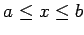

Flächeninhalt eines zwischen den Punkten B und C krummlinig begrenzten Trapezes: Der Flächeninhalt eines oben zwischen den Punkten A und B krummlinig begrenzten Trapezes (s. linke Abbildung) bei explizit (y=f(x) und ) bzw. in Parameterform ( gegebener Kurvengleichung:
(8.59a)
Flächeninhalt eines seitlich zwischen den Punkten G und H krummlinig begrenzten Trapezes: Der Flächeninhalt eines seitlich zwischen den Punkten G und H krummlinig begrenzten Trapezes (s. rechte Abbildung) bei explizit (x=g(y) und ) bzw. in Parameterform () gegebener Kurvengleichung:
(8.59b)
Flächeninhalt eines Kurvensektors: Der Flächeninhalt eines Kurvensektors (s. Abbildung), begrenzt durch ein Kurvenstück zwischen den Punkten K und , das mit einer in Polarkoordinaten gegebenen Kurvengleichung (, ) beschrieben wird:
(8.59c)
Flächeninhalte von komplizierteren Figuren werden mit Hilfe des Kurvenintegrals oder mit Hilfe des Doppelintegrals berechnet. Allgemeine Formeln zur Berechnung von Flächen mit Hilfe von Doppelintegralen sind in der Tabelle Anwendung von Doppelintegralen angegeben.